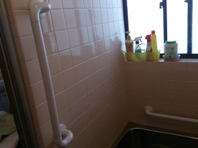
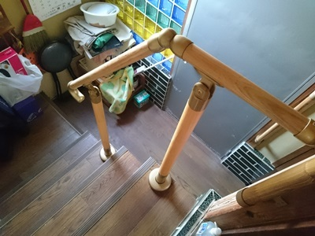
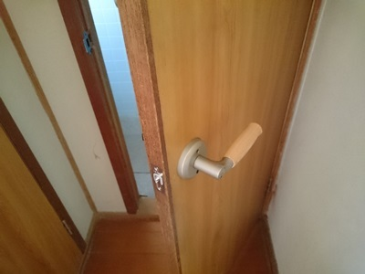
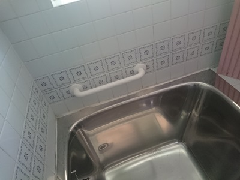
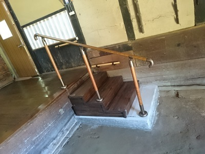
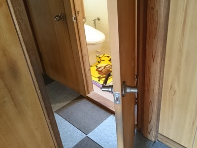
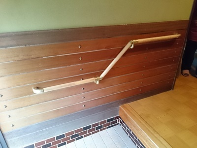
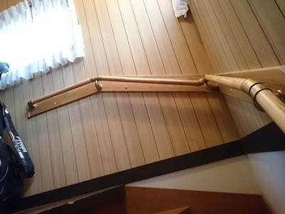
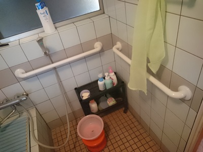

| 工事する側が真剣に伝えたいことをまとめました 介護住宅改修術: 40歳から知るべき介護保険の使い方 | |
| 齋藤憲嗣 | |
| (2018) | |
はじめに
介護保険を利用して住環境の整備を行えることをご存知ですか？
知らないと損をする介護保険を利用しての５０の工事事例集！
これからの介護に不安を感じたり、ご両親の介護で困っている方に読んでいただきたい事例集です。
●介護に知識のない工務店さんに工事を依頼して失敗した。
●勝手に手すりをつけてしまって使うことがなかった。
●制度を知らずに工事をして補助が受けられなかった。
などなど
そんな失敗をしないために・・・
年間１００件以上の住宅改修に関わる立場にいる視点と経験で、事例を紹介することで解り難い介護保険を理解するために役立つと考えました。
福祉住環境コーディネーターの知識で、工事する側からの視点を大切にして紹介しています。
これからの老後の備えに役立つことができれば幸いです。
■著者 齋藤憲嗣（さいとうけんじ）
ほほえみライフ代表 福祉住環境コーディネーター 福祉用専門相談員
福祉と建築の立場から施工やアドバイスを行い、年間１００件以上の住宅改修に関わるほか、経験を活かして養成校で講師も務める。
●第１章 介護保険を利用しての住宅改修の方法
■介護保険を利用してできる住宅改修とは
介護保険を利用しての住宅改修とは、住宅改修費を２０万円まで支給してくれるサービスです。ただし、工事費用の１割（一定以上所得者は２割または３割）を、対象者が負担する必要があります。原則１人１回しか利用できません。
※支給限度額については、在宅サービスの支給限度額とは別枠。
※３割負担は平成３０年８月から。
■誰でも利用できるのか
要介護・要支援認定を受けている方（要支援１～２、または要介護１～５の認定が必要）。
※介護保険を申請中の場合であっても可能。但し、介護認定非該当になった場合は全額自己負担となります。
※入院中や施設入所の場合であっても可能。ただし、在宅に復帰を前提とした工事で、復帰しない場合は全額自己負担となります。
■どんな住宅改修に利用できるのか
●手すりの取り付け
自宅での転倒防止や移動動作の補助のために、手すりを取り付けるための工事費用です。
●段差の解消
床などの段差をなくすことで、転倒を防止し、移動しやすくする工事費用です。
●滑り防止および移動しやすくするための床材変更
居室の床を畳から木製のフローリング床へ取り換えるなど、すべりにくい材質に変える工事費用です。
●扉の取り換え
開き戸を引き戸やアコーディオンカーテンへ変更したり、ドアノブをレバーハンドルへ取り換えたりする工事費用です。
●便器の取り換え
トイレ使用時の体の負担を軽減するために和式トイレを洋式トイレに取り替える工事費用です。
■工事までの流れはどうするのか（受領委任払いの場合）
●ケアマネージャーや福祉住環境コーディネーターなどに相談しましょう。
ケアマネージャーがいない場合は、福祉住環境コーディネーターなどに現状困っていることを伝え、住宅改修の利用を検討してもらいましょう。
●工事業者を決めて、家の下見をしてもらいましょう。
普段の生活状況や改修の希望を伝え、どんな改修をすべきなのかを検討してもらいましょう。状況に応じて、医師や理学療法士などの専門職の方のアドバイスも必要です。
●見積もりを確認して契約後に住宅改修依頼申請をしましょう。
工事業者から、改修の図面、工事前写真（日付入り）、見積書（本人名義）を提出してもらい、ケアマネージャーや福祉住環境コーディネーターなどに、工事に必要な理由書を添付します。
●申請後に決定通知が届いてから工事を行いましょう。
通知後に工事をしなければ、介護保険が適応されませんのでご注意を！
●工事後に支払いを済ませ、完了報告をしましょう。
工事業者から、領収書（本人名義）、請求書（本人名義）、工事後写真（日付入り）を提出してもらい添付します。
■複数回に分けて利用することも可能か
補助の上限を２０万円としていますが、これを複数回に分けて利用することも可能です。
例えば１０万円の工事を行った場合でも、次回に繰り越して１０万円分を別工事の際に利用できます。つまり上限金額である１万円までであれば、複数回にわたっての利用が可能です。
また、支給額は１人あたりに対しての金額となります。夫婦２人が対象となっていれば、２人分で合計４０万円までが対象です。
●第２章 事例① 手すり
＜
手すり 玄関、廊下＞
■介護保険を利用して二回目の住宅改修工事
【使用者の状態など】
浜田市内で転倒予防に手すりの取り付け工事を行いました。
以前、介護保険を利用されて工事を行いましたが、身体状態の変化で数回転倒をされ、日々転倒の危険が高くなり、二回目の工事です。
【行ったリフォーム】
玄関に既製品の上がりかまち用手すり（アロン化成）を取り付けました。玄関框の段差を何かにつかまらないと安定して移動できなくなったためです。
手すりをつかむことで上がり降りを安心して行えるようになりました。
今回、手すりのぐらつきを抑え、強度を出すために既製品を提案させていただいています。
また、寝室からトイレまでの動線の廊下に手すりを取り付けました。
手すり金具のブラケットを聚楽の壁に直接取り付けができなかったので、補強板を取り付けて、その補強板にブラケットを取り付けています。
今までは、掴むものもなく壁に手をかけて移動されていたので、何かの拍子に体制を崩されて転倒されたこともあり、ヒヤッとすることが増えていたようですので、移動が安全にし易くなったとのことです。
ちなみに手すりの高さは、普段使われている杖の高さにしています。
以前、介護保険を利用して手すりの取り付け工事を行い、１度目に限度額を使い切らなかったので、今回はその残高で工事を行っています。
介護保険では、一人２０万円までは原則１回の住宅改修工事ができます。しかし、原則１回とは２０万円の枠を使い切ることを意味し、工事の回数ではないので間違わないようにお願いします。
一度に住環境の整備を行わずに身体状況の変化に合わせて、住環境の整備を行うことも大切です。
・受領委任払い
・工期：半日
・内容：玄関、廊下２か所手すり
・費用：１４００００円（自己負担１４０００円介護保険適用のため、１割負担）
・支払い:１４０００円
～お見積り大歓迎～
『ほほえみライフ』（有限会社 齋藤アルケン工業）
〒
６９７-０００６
島根県浜田市下府町３２７-１１６
０８５５-２２-７２７７
＜ 手すりなど 玄関外階段、浴室、浴室床材の変更＞
■玄関前階段と浴室に手すりの取り付け工事
【利用者の状態など】
関節リウマチ。ガンも患い、日内変動で歩行が安定しない。
【行ったリフォーム】
通院時に家族の支えだけでは玄関前の階段を上り下りするのが危険とのことでしたので、屋外手すり（TOTO）を提案しました。
浴室にも手すりを提案しました。
本人と家族に、入浴時の移動動線や浴槽への入り方などを確認してもらいました。それによって、手すりの位置や形状を決定していきました。
まだ若い方でしたが、関節リウマチを患っていらっしゃいましたので、介護保険の特定疾患で介護保険の適応になりました。ゆえに、介護保険住宅改修費支給サービスを利用することができました。
日内変動で状態の浮き沈みがあり、手すりなどの支えるものがないと安全な歩行ができない時もあり、家族が、一人での移動を非常に心配されていました。
介護保険住宅改修費支給サービス以外の他のサービスを利用していないとのこと。なおさら、自分の家で自由にうごくことができるというのが重要です。
・受領委任払い
・工期：１日
・内容：玄関外階段、浴室３か所手すり、浴室床材の変更
・費用：２９００００円
・支払い：１１００００円
（介護保険の限度額２０００００円を超えたため、一割負担２００００円+実費９００００円）
【特定疾病とは】
特定疾病とは、心身の病的加齢現象との医学的関係があると考えられる疾病であって次のいずれの要件をも満たすものについて総合的に勘案し、加齢に伴って生ずる心身の変化に起因し要介護状態の原因である心身の障害を生じさせると認められる疾病である。
１)６５歳以上の高齢者に多く発生しているが、４０歳以上６５歳未満の年齢層においても発生が認められる等、罹患率や有病率(類似の指標を含む）等について加齢との関係が認められる疾病であって、その医学的概念を明確に定義できるもの。
２)３～６ヶ月以上継続して要介護状態又は要支援状態となる割合が高いと考えられる疾病。
※厚生労働省参照
～お見積り大歓迎～
『ほほえみライフ』（有限会社 齋藤アルケン工業）
〒
６９７-０００６
島根県浜田市下府町３２７-１１６
０８５５-２２-７２７７
＜
手すり 浴室＞
■ユニットバスに後付け手すりを取り付け
【利用者の状態など】
認知症を患い、下肢筋力低下で足腰が弱くなり、福祉用具レンタルでベッド利用者。
【行ったリフォーム】
浴槽からの出入りに蛇口やシャワーフックを持ったりされ危険だということ。
ユニットバスの場合、後からの手すりの設置が安全面から取り付けができない場合もあります。
今回は、タカラさんのユニットバスでしたので、まずはメーカーに取り付けの可否を確認しました。確認後「タカラ 安心ハンドバー」「タカラ 安心ハンドバー後付けキット」の取り付けを行っています。
年齢や疾患に伴う身体機能の低下を抑制し、現状維持を目指す必要性もあります。
そのためにも、できるだけ現状と同じように動作が行えるように環境の整備も大切になってきます。
入浴時は見守りでの介助、浴槽からの出入りに介護者が手助けを行うため、事故や転倒をしないことに注意する。また、介護する側の負担も大きいので、無理のないように適信なリフォームをおススメします。
・受領委任払い
・工期：半日
・内容：浴室手すり
・費用：２５０００円（自己負担２５００円介護保険適用のため、１割負担）
・支払い：２５００円
～お見積り大歓迎～
『ほほえみライフ』（有限会社 齋藤アルケン工業）
〒
６９７-０００６
島根県浜田市下府町３２７-１１６
０８５５-２２-７２７７
＜
手すり 屋外＞
■屋外通路の手すりを取り付け工事
【利用者の状態など】
股関節を痛めている。
ゆえに、歩行が不安定になり、何かに掴まるか伝って姿勢を保持しないと歩行が難しい。
今までは壁を伝って移動していましたが、悪天候の日などや雨で壁が濡れていると危険。
【行ったリフォーム】
以前、家屋内の手すり工事を介護保険を利用して行いました。前回は、介護保険の適応範囲内の金額の工事で屋外の階段に手すりを取り付け、家屋内に手すりの取り付けを行っています。
屋外用の手すりもいろいろあるのですが、夏場や冬場の温度変化による手すりを持った瞬間に感じる「熱い！」「冷たい！」を抑えるために手すり棒の部分を軟質樹脂にしました。
手すりの高さは、普段使用している杖の高さに設定し、移動がしやすいようにしています。
この度は、前回の工事で介護保険の住宅改修工事２０万円（原則１回）の枠を使い切っていたため、介護保険を活用しての住宅改修ではなく、実費による工事となっています。
屋外の手すりのない状況では、精神的に身体状況も悪くなり、外出が億劫になり、外出頻度も少なかったようです。
家の中ばかり閉じこもっていると認知症を誘発させたり、体力の低下を招きます。
日常生活での生活の質を高めることで、介護予防も行えます。健康でいるためには、外出することも大切です。
・保険適用外
・工期：１日
・内容：屋外手すり
・支払い：１７００００円（介護保険適用外）
～お見積り大歓迎～
『ほほえみライフ』（有限会社 齋藤アルケン工業）
〒
６９７-０００６
島根県浜田市下府町３２７-１１６
０８５５-２２-７２７７
＜
手すり 玄関、玄関前屋外階段手すり＞
■転倒予防に手すりを取り付け
【利用者の状況など】
自宅で転倒し、硬膜外血種と診断され、入院。
退院後も歩行が不安定で、介護保険認定の申請を行い要介護１の介護認定をされています。退院後も転倒する回数も多く、歩行のふらつきがあり。
【行ったリフォーム】
玄関は、玄関框の段差移動時に掴むものがなく危険でした。しかし、希望としては、普段、一人で移動させたいとのこと。
玄関框の段差の移動に手すりを取り付けました。
下駄箱もあり、手すりの高さが少し高めですが、移動時にしっかり手すりを握って移動が行えるようにました。
降りる時にふらつくことが多かったとのことですが、本人さんの背丈でも問題なく使用できる高さで、介護する側も手すりを持ってもらうだけでも負担は軽減できるとのこと。
玄関前の屋外階段は、何もつかむものがありませんでした。
少しの長さですが、階段の上り下りが危険で転倒するの可能性が十分にあります。実際、転ばれたりされている様子でした。
退院後は、通院時などの限られた場合のみ玄関から屋外に出る機会はなくなったとのことです。しかし、手すりを取り付けることで、たまの散歩などで気分転換が行えれば幸いです。
今後、デイサービスなども利用しながら、生活の質を向上したいとのこと。
・受領委任払い
・工期：１日
・内容：玄関、玄関前屋外階段手すり
・費用：９００００円（自己負担９０００円介護保険適用のため、１割負担）
・支払い：９０００円
～お見積り大歓迎～
『ほほえみライフ』（有限会社 齋藤アルケン工業）
〒
６９７-０００６
島根県浜田市下府町３２７-１１６
０８５５-２２-７２７７
＜
手すり 浴室、トイレ＞
■大腿骨骨折で手すり取り付け工事
【利用者の状態など】
大腿骨骨折（転倒）で入院。リハビリ後に退院。
家の中では伝え歩きで、屋外では杖を使用するような歩行状態。入院生活が長かったことで下肢筋力が低下していたこと。他の疾病も発症されていて体力低下。
【行ったリフォーム】
本人に不便さを感じる個所、怖さを感じる個所などの聞き出しから始めました。
広い浴室でしたので、手すりなどのつかまるものがないと移動などの動作も行えない状態。
浴室の出入りや浴槽への跨ぎ動作、浴室内での入浴動作など、入浴に関する問題が多く、手すりの取り付けと福祉用具での不安解消を提案しました。
浴室入り口の出入り時につかむ手すり、浴槽への出入り時につかむ手すり、浴槽内で姿勢を保持するための手すりを取り付けました（介護保険を利用で、シャワーベンチも購入）。
手すりの位置は、本人さんの背丈に合わせた高さ、浴槽への出入りの動作を確認してから行ってます。
他にも玄関框の段差の昇降のために手すりを取り付けました。
また、トイレにも手すりを取り付けました。
まず、便座に座ってもらい、立ち座りの動作を交えながら、どこにどのような形で手すりがあれば動作負担が軽減でき、安全に行えるかを聞きます。
手すりの高さや位置はその人それぞれの習慣化した動作によって千差万別ですので、必ず動作を確認する必要があります。
この作業を無視して手すりを取り付けてしまう業者も少なくはありません。
今後、他の疾患もあり状態の変化も予想されるため、状態の変化に合わせた住環境の整備も合わせて話をしました。定期的訪問で、アフターフォローが必要な事例です。
・受領委任払い
・工期：１日
・内容：トイレ、浴室など手すり４か所
・費用：５００００円（自己負担５０００円介護保険適用のため、１割負担）
・支払い：５０００円
～お見積り大歓迎～
『ほほえみライフ』（有限会社 齋藤アルケン工業）
〒
６９７-０００６
島根県浜田市下府町３２７-１１６
０８５５-２２-７２７７
＜
手すり 玄関前屋外階段手すり＞
■玄関に外出時に必要な手すりを取り付け
【使用者の状態など】
心臓疾患による体力低下、伴って下肢筋力低下が著しく、歩行が不安定になった方。
玄関外の移動は、介護者が手を添えて移動。しかし、介護者も高齢であること、何かあって転倒した場合緒になって転倒する危険もある。
【行ったリフォーム】
玄関前屋外階段の手すりの工事を行いました。
庭の石に傷を付けたくないということ、外観にあった少し高級感のある手すりの材質をご希望だったので、TOTOの屋外用手すりを使用しています。
この手すりは、支柱設置後の手すりの高さ調整も行えるため、状態の変化に応じて、安全に掴める手すりの高さを調整することも可能です。材質も手すりはアルミを軟質樹脂で覆い、冬の寒さや夏の暑さによる温度変化にも対応した材質になっています。
・受領委任払い
・工期：１日
・内容：玄関前屋外階段手すり
・費用：７００００円（自己負担７０００円介護保険適用のため、１割負担）
・支払い：７０００円
～お見積り大歓迎～
『ほほえみライフ』（有限会社 齋藤アルケン工業）
〒
６９７-０００６
島根県浜田市下府町３２７-１１６
０８５５-２２-７２７７
＜
手すり 玄関＞
■玄関框を安全に移動できるように手すり工事
【使用者の状態など】
脳幹梗塞を発症し、入院中（リハビリ中）。
左上下肢に麻痺が残り、段差昇降が難しい。杖での歩行を目標。
病院でPT、OTからリハビリ状況を聞き、本人の歩行状態を確認。
【行ったリフォーム】
PT、OT、本人、家族の話をまとめて、玄関框の昇降用に手すりを取り付けました。
しかし、框の踏み面の形が一定ではなく三角形なため、足が完全に踏み面に乗り切らないため、両手すりで昇降の際にどちらの手すりもしっかりと掴めるようにしました。
木製の支柱ですが、４５Φ
の支柱を利用し、手すり棒は３５Φ
でエンドの両端には袖を引っかかり難くするするエンドキャップを取り付けています。
・受領委任払い
・工期：半日
・内容：玄関手すり
・費用：７００００円（自己負担７０００円介護保険適用のため、１割負担）
・支払い：７０００円（
～お見積り大歓迎～
『ほほえみライフ』（有限会社 齋藤アルケン工業）
〒
６９７-０００６
島根県浜田市下府町３２７-１１６
０８５５-２２-７２７７
＜
手すり 勝手口、廊下、浴室。浴室扉の取替＞
■骨折で入院して今までのように生活できなくなりました
【使用者の状態など】
独居。転倒による骨折で入院。退院後も歩行が不安定。
親族の方にケアマネいる（介護従事者の方がいらっしゃると話の進み具合もスムーズ）。
行ったリフォーム】
勝手口に手すりを取り付けました。
玄関からの出入りも行いますが、状態が安定しないので、状態が回復するまでは、楽に出入りができるいつも過ごすリビングからの出入りすることに。

浴室の出入口にオフセットの手すりを取り付け、浴槽横にも手すりを取り付けています。
オフセットタイプの手すりは、出入口用として手首の返しが小さく済むので手すりをつかみ易いのが特徴です。
浴室内が脱衣場から８センチ下がっているため、折れ戸を開けて掴むところがなかったため、折れ戸の出入り口も反対側に替え、開けてすぐに手すりがあるようにしています。
これだと楽に開け閉めもでき、出入りの動線も安全にオフセットタイプの手すりを持ちながら行えるようになります。
・受領委任払い
・工期：２日
・内容：勝手口、廊下、浴室など４か所手すり、浴室扉の取替
・費用：１６００００円（自己負担１６０００円介護保険適用のため、１割負担）
・支払い：１６０００円
～お見積り大歓迎～
『ほほえみライフ』（有限会社 齋藤アルケン工業）
〒
６９７-０００６
島根県浜田市下府町３２７-１１６
０８５５-２２-７２７７
＜
手すり 浴室＞
■息子さんの助言で手すり工事を決意
【使用者の状態など】
腰部狭窄症の影響で下肢に痺れがあり、力が入らない。
何かに掴まらないと歩行が安定しない。
入浴と排泄は自立している。
【行ったリフォーム】
浴室は比較的大きな浴室。
工事前は壁伝いに浴槽まで移動されていたそうで、その動線に手すりを取り付けました。
手すりは、長さが既製品では対応できなかったので、TOTOのイージーオーダーで、長さに合わせて注文し、取り付けを行っています。
・受領委任払い
・工期：半日
・内容：浴室４か所手すり
・費用：７００００円（自己負担７０００円介護保険適用のため、１割負担）
・支払い：７０００円
～お見積り大歓迎～
『ほほえみライフ』（有限会社 齋藤アルケン工業）
〒
６９７-０００６
島根県浜田市下府町３２７-１１６
０８５５-２２-７２７７
＜
手すり トイレ、廊下、今、玄関＞
■玄関などに手すりを取付けました
【使用者の状態など】
高齢者夫婦世帯（近所に子供がおり、支援が得られる）。
認知症を患い、下肢筋力低下もあり、歩行が不安定。
【行ったリフォーム】
家屋内に移動用、立ち座り用、立位維持用など、トイレ、廊下、居間、玄関に手すりを取り付けました。
玄関の手すりは支柱を使った手すりを設置し、強度を確保するために補強で横棒を取り付け、壁からブラケットで固定しました。
左右の揺れもなく、玄関の移動の際の揺れによる不安や怖さもないと思います。
今後は、福祉用具でも支援していく予定です。
・受領委任払い
・工期：半日
・内容：トイレ、廊下、居間、玄関など７か所手すり
・費用：８００００円（自己負担８０００円介護保険適用のため、１割負担）
・支払い：８０００円
～お見積り大歓迎～
『ほほえみライフ』（有限会社 齋藤アルケン工業）
〒
６９７-０００６
島根県浜田市下府町３２７-１１６
０８５５-２２-７２７７
＜
手すり 玄関、トイレ、浴室＞
■借家で介護保険を利用して住宅改修
浜田市内で介護保険を活用して手すりの取り付けの工事を行いました。
このお宅は借家でしたので、工事をスムーズに、行うためには、大家の承諾を文面でいただく必要があります。
借家の場合、退去時に手すりを付ける前のように原状復帰することなど、条件が付くことも少なくなく、しっかりと大家さんに確認する必要はあります。
大体の場合、公共の市営住宅や県営住宅などは、原状復帰を求められます。
【行ったリフォーム】
浴室、玄関、トイレの出入りに両サイドに手すりがないと安定しないということで、手すりを付けました。
・受領委任払い
・工期：１日
・内容：玄関、トイレ、浴室８か所手すり
・費用：９００００円（自己負担９０００円介護保険適用のため、１割負担）
・支払い：９０００円
～お見積り大歓迎～
『ほほえみライフ』（有限会社 齋藤アルケン工業）
〒
６９７-０００６
島根県浜田市下府町３２７-１１６
０８５５-２２-７２７７
●第３章 事例② 手すり
＜
手すり 廊下＞
■生活保護の方の介護保険を利用しての手すり工事
【使用者の状態など】
トイレまでの廊下が長く、下肢筋力低下のための歩行にふらつきにより転倒の危険性。
市役所の生活保護担当者、ケアマネージャーも交えながら打ち合わせました。
【行ったリフォーム】
廊下の壁に手すりのブランケット金具の強度が保てないため取り付けが不可能。補強板を使用し、手すりの取付工事。
・受領委任払い
・工期：１日
・内容：廊下手すり
・費用：１０００００円（自己負担１００００円介護保険適用のため、１割負担）
～お見積り大歓迎～
『ほほえみライフ』（有限会社 齋藤アルケン工業）
〒
６９７-０００６
島根県浜田市下府町３２７-１１６
０８５５-２２-７２７７
＜
手すり 玄関、トイレ、浴室＞
■退院前に住環境の整備（浜田市）手すり工事
【使用者の状態など】
脳梗塞で入院中（脳梗塞の後遺症で左上肢に麻痺もあり）。
本人やご家族、理学療法士やケアマネージャーと自宅に一時帰り、実調を行いました。
【行ったリフォーム】
工事などで行えない住環境の整備については、福祉用の貸与や購入で整える予定。
玄関手すり。
トイレ手すりはTOTOの手すりを使用しました。
TOTOのパブリック用の腰掛け便器用の手すりを、高さや長さを調整し、イージーオーダーで作成しました。
比較的スペースがあるトイレだったので、手すりを右に取り付けています。
・償還払い（入院中）
・工期：１日
・内容：玄関、トイレ、浴室など５か所手すり
・費用：９００００円（自己負担９０００円介護保険適用のため、１割負担）
・支払い：９００００円
～お見積り大歓迎～
『ほほえみライフ』（有限会社 齋藤アルケン工業）
〒
６９７-０００６
島根県浜田市下府町３２７-１１６
０８５５-２２-７２７７
＜
手すり 玄関外、室内階段＞
■退院後に手すり取り付け工事
【使用者の状態など】
心筋梗塞で入院中に寝たきり状態が続き、下肢筋力低下により、歩行が不安定で疲れやすいく、転倒しやすくなったご様子。
【行ったリフォーム】
退院してから、手すりの必要性を確認してからの工事を希望される。
玄関前の屋外手すり

家の中の階段に手すり
転倒や転落などの危険もあり、入院時のリハビリ担当の理学療法士からも身体状況の確認。下肢の可動域の確認などを行い、本人や家族の要望を考慮し、手すりを取り付けています。ます。
通所リハビリに通われ、身体状態も回復にあるようですので安心しています。
・受領委任払い
・工期：１日
・内容：玄関外、室内階段など６か所手すり
・費用：２０００００円（自己負担２００００円介護保険適用のため、１割負担）
・支払い：２００００円
～お見積り大歓迎～
『ほほえみライフ』（有限会社 齋藤アルケン工業）
〒
６９７-０００６
島根県浜田市下府町３２７-１１６
０８５５-２２-７２７７
＜
手すり 浴室＞
■浴室にオリジナル手すり取り付け
【使用者の状態など】
腰部脊柱管狭窄症を患った経緯から、前屈みの姿勢が取れないため、できるだけ立直状態で跨ぎの動作をしなければならない。
【行ったリフォーム】
まず、介護保険を利用しての福祉用具購入で浴槽手すりを検討。
しかし、浴槽の幅が広く、対応できる浴槽手すりがありませんでした。
それで、オリジナルの浴槽手すりで、住宅改修で行っています。
形、大きさなどは、話をしながら決めました。
今後、持ち手の高さを変えることも可能です。状態によって必要性がある時には再度、工事を行う予定です。
・受領委任払い
・工期：半日
・内容：浴室手すり
・費用：３００００円（自己負担３０００円介護保険適用のため、１割負担）
・支払い：３０００円
～お見積り大歓迎～
『ほほえみライフ』（有限会社 齋藤アルケン工業）
〒
６９７-０００６
島根県浜田市下府町３２７-１１６
０８５５-２２-７２７７
＜
手すり 階段。トイレドアノブ＞
■階段手すり（介護保険）の工事
【使用者の状態など】
脳梗塞の後遺症。
年々、移動動作に負担がかかるようになり、階段の上り下りが難しくなったとのこと。
【行ったリフォーム】
数年前にも介護保険を利用して住宅改修工事を行っていたそうですが、その時に満額（２０万）利用せずに残があったので、その残高で今回の工事を行いました。
階段手すり
手すりを使っての昇降で不安が消えたとのこと。
また、トイレ出入りのドアノブも脳梗塞の後遺症で握り難く、レバー式に交換しています。
トイレの立ち座りにも手すりを取り付けました。
トイレへの移動、排泄動作はとても大切な住環境の整備個所の一つです。

トイレドアノブ交換
・受領委任払い
・工期：１日
・内容：階段２か所手すり、トイレドアノブ交換
・費用：６００００円（自己負担６０００円介護保険適用のため、１割負担）
・支払い：６０００円
～お見積り大歓迎～
『ほほえみライフ』（有限会社 齋藤アルケン工業）
〒
６９７-０００６
島根県浜田市下府町３２７-１１６
０８５５-２２-７２７７
＜
手すり トイレ、玄関＞
■二度目の介護保険を利用しての住宅改修
【使用者の状態など】
下肢筋力低下、膝の痛みなので、階段の昇段や、立ち上がりに支障を感じるようになったとのこと。
【行ったリフォーム】
玄関手すり
トイレ手すり
以前、介護保険を利用して段差解消の工事をされていました。
その時の工事額が２０万円に達していなかったため、今回はその残高で行うことができました。
身体にあった位置にしっかりと手すりを取り付けることができ、動作の負担軽減になっています。
・受領委任払い
・工期：半日
・内容：玄関、トイレ手すり
・費用：５００００円（自己負担５０００円介護保険適用のため、１割負担）
・支払い：５０００円
～お見積り大歓迎～
『ほほえみライフ』（有限会社 齋藤アルケン工業）
〒
６９７-０００６
島根県浜田市下府町３２７-１１６
０８５５-２２-７２７７
＜
手すり 階段＞
■階段に手すり取り付け
【使用者の状態など】
小児麻痺、脳梗塞と病歴があり。
何かにつかまらないとしっかりと階段の昇降ができない。
再度の脳梗塞発症で入院し、退院後に手すりの取付けの依頼があり、工事しています。
【行ったリフォーム】
下りる時に左側の手すりを、新たに取り付けています。
登る時には既存の手すりで何とか移動されていたようです。
しかし、脳梗塞を発症し、病院でリハビリを行ってもなお、麻痺や動作に不安が残るため、リハビリ担当の理学療法士に相談しながら、本人の希望もあって手すり取付けとなりました。
・受領委任払い
・工期：半日
・内容：階段手すり
・費用：４００００円（自己負担４０００円介護保険適用のため、１割負担）
・支払い：４０００円
～お見積り大歓迎～
『ほほえみライフ』（有限会社 齋藤アルケン工業）
〒
６９７-０００６
島根県浜田市下府町３２７-１１６
０８５５-２２-７２７７
＜
手すり 浴室＞
■浴室に手すり取り付け工事
【使用者の状態など】
一部這って生活している状況を、親族が見ての依頼。
【行ったリフォーム】
浴室に手すりを取り付ける工事を行いました。
以前に介護保険を活用して手すり取り付けなどの住宅改修工事を行っているため、今回は全額自己負担となりました。

浴室内の手すりと脱衣場に手すりを取り付けました。
手すりを取り付けることで移動の負担が軽減されたとのこと。
なかなかわからないことも多く、リフォームの決断ができない場合でも、一度、相談してもらえば、提案などもできます。まずは、行政やケアマネさんなどに相談してみてください。
・受領委任払い
・工期：半日
・内容：浴室手すり
・費用：８０００円
・支払い：８０００円（介護保険適用外）
～お見積り大歓迎～
『ほほえみライフ』（有限会社 齋藤アルケン工業）
〒
６９７-０００６
島根県浜田市下府町３２７-１１６
０８５５-２２-７２７７
<手すり トイレ＞
■トイレに補強板を使用して縦手すりを取り付けました
【使用者の状態など】
パーキンソン病。下肢筋力の低下がみられ、歩行が不安定。
立ち座り時には、何かにつかまらないと歩行と同様に不安定になる。
【行ったリフォーム】
トイレ。便座への立ち座りを安全にするために手すりを取り付けました。
手すりを取り付けるための下地がなかったため、壁紙にあった白い補強板を使用しています。
取り付け後に立ち座り動作をしてもらいました。
以前よりスムーズに動作が行え、便座から立ち上がった瞬間に使用者（介護保険被保険者からも笑顔がこぼれました。
・受領委任払い
・工期：半日
・内容：トイレ２か所手すり
・費用：３００００円（自己負担３０００円介護保険適用のため、１割負担）
・支払い：３０００円
～お見積り大歓迎～
『ほほえみライフ』（有限会社 齋藤アルケン工業）
〒
６９７-０００６
島根県浜田市下府町３２７-１１６
０８５５-２２-７２７７
＜
手すり 廊下＞
■浜田市内で２回目の手すり工事
【使用者の状態など】
ガンを患い、体力低下に伴い歩行が不安定。家の中で、歩行器を使用。
【行ったリフォーム】
介護保険を利用しての２回目の手すり工事を行っています。
使用者（介護保険被保険者）退院前に住環境の整備にて手すりを取り付けました。
そして、退院後の家での生活の中で、再度、住環境の整備を行いました。
退院後の状態が良くなり、伝え歩きでトイレへの移動が可能になりました。
ポータブルトイレを使うのも抵抗があるため、手すり設置となりました。
住環境を整えることで、入院前よりも自立した生活ができているご様子。
・受領委任払い
・工期：半日
・内容：廊下２か所手すり
・費用：１５０００円（自己負担１５００円介護保険適用のため、１割負担）
・支払い：１５００円
～お見積り大歓迎～
『ほほえみライフ』（有限会社 齋藤アルケン工業）
〒
６９７-０００６
島根県浜田市下府町３２７-１１６
０８５５-２２-７２７７
＜
手すり 廊下＞
■浜田市内で廊下に手すりを取り付け転倒防止
【使用者の状態など】
歩行が伝え歩きで不安定になっている。
以前、玄関前の階段に手すりを取り付けたことがある。
【行ったリフォーム】
移動の動線である廊下に手すりを取り付けて欲しいとのこと。
家の雰囲気に合わせた少し濃い目の手すりの色にしました。
高齢者の方の認識を明確にするため、明るい色の手すりを選定することが多いです。
しかし、今回は家族のご要望で雰囲気に合わせた色合いで取り付けを行いました。
・受領委任払い
・工期：半日
・内容：廊下２か所手すり
・費用：３００００円（自己負担３０００円介護保険適用のため、１割負担）
・支払い：３０００円
～お見積り大歓迎～
『ほほえみライフ』（有限会社 齋藤アルケン工業）
〒
６９７-０００６
島根県浜田市下府町３２７-１１６
０８５５-２２-７２７７
＜
手すり 屋外廊下、浴室＞
■外部廊下に転倒防止、転落防止で手すりを工事
【使用者の状態など】
転落防止と転倒防止。
利用者（介護保険被保険者）が高齢で、歩行にふらつきがあり。
直近で何度か転倒されたとのこと。
要支援１の方で他の介護サービスを利用されていないとのことで、介護保険を利用してのサービスは、住宅改修のみとなります。
【行ったリフォーム】
立派な歴史を感じるお家の廊下に手すりを取り付ける工事を行いました。
手すり取り付けにあたって、家族とお話をさせていただきました。
取り付けの手すりの種類、取り付け位置などを打ち合わせしました。
【住宅改修にあたっての手続きの仕方】
改修前に提出するもの＜
事前申請＞
•介護保険居宅介護（介護予防）住宅改修費事前承認申請書兼支給申請書
被保険者の住所、氏名、改修の内容、施工業者名などを記載してください。
•工事費見積書 見積書の宛名は、被保険者にしてください。
改修に必要な費用が、改修種類・箇所ごとに確認できるものをご用意ください。
•住宅改修が必要な理由書
居宅介護（介護予防）支援事業所の介護支援専門員（ケアマネジャー）に作成してもらってください。
地域によっては福祉住環境コーディネーターの作成も可能です。
•改修箇所の現況写真
改修箇所の日付の入った写真を提出してください。カメラに日付を入れる機能がない場合は、黒板等に書いて写し込んでください。
•改修箇所の平面図
改修箇所のわかる平面図を作成してください。
•住宅所有者の承諾書
借家など、被保険者ご本人と住宅所有者が異なる場合は、当該住宅を改修することについての所有者の承諾書を提出してください。
（２）改修後に提出するもの＜
事後申請＞
•領収証 領収証の宛名は、被保険者にしてください。
•工事費内訳書
•改修後の写真
日付の入った改修箇所の改修後の写真を提出してください。
・受領委任払い
・工期：１日
・内容：屋外廊下手すり、浴室など３か所
・費用：２８００００円
・支払い：１０００００円（介護保険の限度額２０００００円を超えたため、一割負担２００００円+実費８００００円）
～お見積り大歓迎～
『ほほえみライフ』（有限会社 齋藤アルケン工業）
〒
６９７-０００６
島根県浜田市下府町３２７-１１６
０８５５-２２-７２７７
＜
手すり 玄関＞
■介護保険を利用して玄関手すり工事
【使用者の状態など】
骨折で入院をされ、一度、手すりの取り付け工事を行っています。
身体状況も改善し、変化に合わせての住環境の整備も必要となりましたので第二期目の工事です。
玄関に手すりと敷台を取り付けています。
手すりの高さの見極め方は、身長や身体機能にもよります。
手すりの高さを決める測り方は、腕を真っ直ぐ下した状態で手首の位置もしくは、大腿骨大転子の位置、サイズを合わせて作った杖の高さを基準にします。
今回は、腕を真っ直ぐ下した状態で手首の位置を基準に設定し、８００㎜の高さで設定しました。
【介護保険による住宅改修について】
介護保険被保険者について一住居あたり２０万円までの住宅改修費についての利用限度額について、２０万円を数回に分けて利用することも可能です。
ただし、１割もしくは２割は自己負担のため、住宅改修費の支給は１８万円もしくは１６万円が上限となります。※３割負担は平成３０年８月から
支給額は１人あたりに対しての金額となるので、夫婦２人が対象となっていれば、２人分で合計４０万円までが対象です。
●１割負担の場合
例１）対象工事費が２５万円の場合
住宅改修費支給額 １８万円（２０万円の９割）
自己負担額 ７万円（２０万円の１割＋２０万円を超えた額）
例２）対象工事費が１０万円の場合（残り１０万円は次回利用可能）
住宅改修費支給額 ９万円（１０万円の９割）
自己負担額 １万円（１０万円の１割）
※住宅を転居した場合や「介護の必要の程度」の段階が３段階以上重くなった場合は、再度２０万円まで利用することができます。
・受領委任払い
・工期：半日
・内容：玄関手すり
・費用：２００００円（自己負担２０００円介護保険適用のため、１割負担）
・支払い：２０００円
～お見積り大歓迎～
『ほほえみライフ』（有限会社 齋藤アルケン工業）
〒
６９７-０００６
島根県浜田市下府町３２７-１１６
０８５５-２２-７２７７
＜
手すり 玄関＞
■補強板を活用しての玄関に手すり取り付け
【使用者の状態など】
軽度の脳梗塞。歩行にふらつきがあり、段差などの移動が心配。
【行ったリフォーム】
玄関に補強板を活用しての手すりをつけました。
玄関框の昇降に手すりを取り付け、玄関内の移動にも手すりを取り付けています。
使用者が、元大工さんということもあり、ご自宅もご自分で建てられたということ。
それで、希望される箇所に手すりの金具を取り付けるための下地がないことを知らせてくれました。
そのため、２０㎜の補強板を取付け、その補強板に手すり金具を取り付けています。

あれば手をかける手すりですが、なかなか取りつけようと決心するまでが時間がかかるようです。
本人の身体状況の自覚がなかったりすることも大きな要因です。転倒してから手すりの必要性に気が付く前に、家族やケアマネに声掛けしてもらうのも一つの方法です。
ヘルパーや福祉用具専門員も気が付いたことをケアマネなどに報告、連絡、相談は必要です。
一つのチームとして関わりを持ち、今後の在宅での生活をより安全、安心に過ごしていただきたいと思います。
・受領委任払い
・工期：半日
・内容：玄関手すり２か所
・費用：５００００円（自己負担５０００円介護保険適用のため、１割負担）
・支払い：５０００円
～お見積り大歓迎～
『ほほえみライフ』（有限会社 齋藤アルケン工業）
〒
６９７-０００６
島根県浜田市下府町３２７-１１６
０８５５-２２-７２７７
＜
手すり トイレ、台所土間＞
■古民家に木製の手すりを取り付け
【使用者の状態など】
がんを患い、退院したばかり。
抗がん剤治療をしてきた後には、歩行がままならず、段差を上がれない状況。
【行ったリフォーム】
昔ながらのお家で台所に土間のあるお家。
土間から居間へ上がるには６０㎝
の高さがありました。
今までは自家製の木製階段のみで上がり降りができていまし。しかし、抗がん剤治療の影響で日によって這って上がることもあるとのこと。
ふらつきもあり、転落、転倒を心配されていました。
木製の支柱を使っての手すり（金額は少し割高でしたが、しっかりとした工事ができます）
を使って安全に一人で上がり降りが行えます。
また、トイレへの入り口の段差を安全に移動するため、手すり。取り付ける壁に下地がありませんでした。今後、状態の変化によって手すりの高さを調整したい場合、手すりの高さ調整が行えるように下地の補強板を長めにしています。
取り急ぎ、緊急性の高い希望される最低限の手すりの取り付けを行いました。
今後、身体状況に変化があり、他の個所にも手すりが必要になる可能性もあります。
万が一のことを想定し、住環境の整備計画を考えておくことも大切です。
・受領委任払い
・工期：１日
・内容：台所土間、トイレなど手すり３か所
・費用：５００００円（自己負担５０００円介護保険適用のため、１割負担）
・支払い：５０００円
～お見積り大歓迎～
『ほほえみライフ』（有限会社 齋藤アルケン工業）
〒
６９７-０００６
島根県浜田市下府町３２７-１１６
０８５５-２２-７２７７
＜
手すり 浴室＞
■浴槽へ安全に入るために手すりを取り付け
【利用者の状態など】
独居。下肢筋力低下により浴槽の跨ぎ動作に不安を覚えるようになったということ。
入浴は自立しているため、自分のできることは自分でしたいという強い思い。
福祉用具のレンタルサービス使用者。
【行ったリフォーム】
浴槽へのまたぎ動作の確認をし、利用者本人の意見も聞きながら手すりの位置の配置。
使用する手すりの材質や手すりの長さも相談しました。
理想を言えばT字型で手すりを取り付けたのですが、TOTOのオリジナル手すり（オーダーメイド）が理想とする規格に合わず、仕方なく２本の手すりで対応しました。
浴室のような水回りで使用する手すりは、防水質の材質で滑り難くする為の凹凸をつけた手すりが理想です。材質も温度変化に対応できる軟質樹脂がおススメです。
ステンレス手すりは、防水性に優れてはいます。しかし、表面に凹凸がないため持ち手が滑りやすいこと（水に濡れるとさらに滑りやすい）。温度変化に敏感なため、持ち手が熱かったり、冷たかったり使用勝手が難くなる場合もあります。
・受領委任払い
・工期：半日
・内容：浴室手すり２か所
・費用：２００００円（自己負担２０００円介護保険適用のため、１割負担）
・支払い：２０００円
～お見積り大歓迎～
『ほほえみライフ』（有限会社 齋藤アルケン工業）
〒
６９７-０００６
島根県浜田市下府町３２７-１１６
０８５５-２２-７２７７
●第４章 事例③ 手すり＆ 段差解消
＜
手すり 勝手口、廊下、浴室など手すり８か所、勝手口、廊下敷台設置（段差解消）＞
■介護保険を利用して段差の解消と手すり工事
【利用者の状態など】
胸部大動脈瘤で手術。後、臥床時間が長かったことや年齢的な下肢筋力低下により、足に
力が入らず、何かに掴まらないと歩行困難になった。
【行ったリフォーム】
家の中での移動時に不便さを感じ、見守る側も転倒の心配が大きくなったのでとのこと。
介護申請を行い、介護保険を利用して家屋内の段差解消と手すりの取り付け工事を行いました。
歩行が不安定なため、各所各所に手すりを取り付けています。
普段から様子を見ていた介護者に話を聞き、危険な個所や、手すりがあれば楽だろうなと思われる場所を確認。
続いて、本人にも話を聞き、動作の確認もさせていただいた上で、手すりなど取り付け位置を決めました。
トイレまでの廊下の動線が心配とのことでしたので、手すりを取り付けています。
台所からの出入りや扉の開閉時に掴むところがないため、不安定な姿勢をされていて危険とのことで手すりを取り付けました。
金具を取り付けるための下地かなかったので補強板を取付け、手すりを取り付けています。
玄関からの出入りが難しく、逆に勝手口からの出入りが容易なため、外出経路を勝手口にしてもらう。
勝手口の出入りは、４０㎝
の高さがある上、掴むところがなかったため敷台と手すりの取り付けをしました。
敷台も框の段差の半分の高さ２０㎝
とし、靴が収納できるように下部に空間を作りました。
以前、増改築をされている影響で廊下に段差があり、寝室からトイレへの移動が危ないとのこと。廊下もしっかりとした造だったので、既存の廊下を損なわないように一段設け、段差の解消を行っています。
・受領委任払い
・工期：２日
・内容：勝手口、廊下、浴室など手すり８か所、勝手口、廊下敷台設置（段差解消）
・費用：２０００００円（自己負担２００００円介護保険適用のため、１割負担）
・支払い：２００００円
～お見積り大歓迎～
『ほほえみライフ』（有限会社 齋藤アルケン工業）
〒
６９７-０００６
島根県浜田市下府町３２７-１１６
０８５５-２２-７２７７
<手すり トイレ手すり（壁補強含む）、トイレ床嵩上げ（段差解消）、トイレ床材の変更＞
■トイレに前方跳ね上げ手すり取り付けて介助の負担を軽減
【使用者の状態】
パーキンソン病
数年前からパーキンソン病を患い、年々できないことが増えてきたとのこと。パーキンソン病は、日内変動もあるため、介助なくてもトイレに行けたり、反対に介助が必要になったりしてします。
そのため、安全に排せつ動作が行なえることと、介護者の負担軽減になることが主な目的です。
【行ったリフォーム】
トイレの便座からの立ち上がり、座っている時の姿勢保持のために手すりの取り付け。
手すりの高さや位置を選定するため、便座に座った動作をしていただき、TOTO座位姿勢保持用商品の前方ボード（跳ね上げタイプ）を提案させていただきました。
便器正面に手すりを取り付けたい点、壁に収納できるようにしたいという点、あまり場所をとらないようしたい点から、TOTOの製品を選択しました。
ボード（手すり保持部）の側面が手をかけ易い薄型形状で、しっかり握れるので姿勢が安定し、動作も容易になります。
表面の材質もウレタンなので、握った際のヒヤッとした冷たさも解消できます。
自力でのトイレ移動、排泄動作ができ、その動作がリハビリに繋がる。自力排泄の期間が長くなるようにとの願いも込められたリフォームです。
壁の補強も行い、少し大がかりな工事となりました。
また、トイレ床もタイルからソフトクッションシートに張り替え、床の嵩上げをしています。
床材を変更することで、滑って転倒する危険を防止し、寒さ対策にもなります。
段差をなくすことで、パーキンソン病の特徴でもある歩行障害にも対応でき、安全に移動も行えます。先々、車いすでの移動が必要になった場合も想定しました。
・受領委任払い
・工期：２日
・内容：トイレ手すり（壁補強含む）、トイレ床嵩上げ（段差解消）、トイレ床材の変更
・費用：１８００００円（自己負担１８０００円介護保険適用のため、１割負担）
・支払い：１８０００円
*トイレ工事の際は、ご本人は、ショートステイなど
「すぐトイレを使える場所」にいらっしゃることをお勧めします。
～お見積り大歓迎～
『ほほえみライフ』（有限会社 齋藤アルケン工業）
〒
６９７-０００６
島根県浜田市下府町３２７-１１６
０８５５-２２-７２７７
＜
手すり 玄関土間。玄関土間階段設置（段差解消）＞
■旧家の玄関土間に階段と手すりを取り付け
【使用者の状態など】
右大腿部転子部骨折により、股関節の可動域の制限あり。
足上げの高さが１８cm程度しかない。
【行ったリフォーム】
歴史のある旧家の玄関の段差解消、並びに、手すり工事。
足上げの高さに合わせ、１６㎝
の階段状にし、転落防止も兼ねて手すりを取り付けました。

昔ながらの土間ですので高さも８０cmもあり、今までは台を置かれて上がり降りをされていたとのこと。工事は、土台をコンクリートで作り安定させ、平行にした上に木製の階段を設置しています。
階段も手すりも家の雰囲気に合わせた濃い目の色合いにし、お家の雰囲気に違和感ないようにしました。
旧家ですので、家屋内の住環境はまだ問題があるとは思います。
身体状況に合わせ、福祉用具のレンタルなども活用しながら、住み慣れた我が家で暮らしていただきたいと思います。
・受領委任払い
・工期：３日
・内容：玄関土間手すり、玄関土間階段設置（段差解消）
・費用：１５００００円（自己負担１５００００円介護保険適用のため、１割負担）
・支払い：１５０００円
～お見積り大歓迎～
『ほほえみライフ』（有限会社 齋藤アルケン工業）
〒
６９７-０００６
島根県浜田市下府町３２７-１１６
０８５５-２２-７２７７
<手すり トイレ、廊下。寝室台設置。トイレ床嵩上げ＞
■ベッドからトイレの移動を負担少なく移動できるように住宅改修
【使用者の状態など】
下肢の筋力低下と交通事故による後遺症で急激に歩行状態が悪化。
夜間のトイレ移動が大変など。
【行ったリフォーム】
廊下から寝室が１２cmほど下がっているため、ベッドから降りてスムーズにトイレまで行けるように、台を設置しました。
介護用ベッドを置いても、踏み台があるので、夜間の移動もスムーズになりました。
立ち上がってから、立位保持と移動が安全に行えるように縦手すりを各所に設置しています。
トイレ床も嵩上げしています。
トイレ便座からの立ち上がりに足に力が入らないとのことで、一番力の入る８㎝
程高く設置。
以前、介護保険を利用して住宅改修を行っていた経緯もあり、今回の工事は全額自己負担になりました。
また、福祉用具レンタルを利用することで、生活の質が向上します。
・介護保険外 自己負担
・工期：１日
・内容：廊下、トイレ手すり３か所、寝室台設置、トイレ床嵩上げ（段差解消）
・費用：１０００００円
・支払い：１０００００円（介護保険適用外につき全額自己負担）
～お見積り大歓迎～
『ほほえみライフ』（有限会社 齋藤アルケン工業）
〒
６９７-０００６
島根県浜田市下府町３２７-１１６
０８５５-２２-７２７７
＜
手すり 玄関。 玄関敷台設置（段差解消）＞
■退院に向けて手すりを取付工事
【使用者の状態など】
がんを患い、入院中。体力低下があり、歩行が不安定になっている。
介護者の負担軽減と安全な段差移動を確保するため。
【行ったリフォーム】
自宅玄関に手すりと踏み台を設置しました。
医療機関からの相談で早急に住環境整備を行って欲しいとの相談がありました（平常は、家族か本人）。病院で家族と看護師さん、PTやOT、相談員で話し合いを行いました。
手すりは、動作の確認から身体状況に合わせて高さが調整できるTOTOの既製品の手すりにしました。
框の上がり降りにも必要な両手すり案もでましたが、降りる時は後ろ向きに降りるとのことでしたので、片手すりで対応しました。
段差解消のための敷台設置も足の上げることができる高さが２５㎝
と病院から提示されたので、框の高さ４０㎝
の半分の２０㎝
の高さで敷台を作成し設置しました。
退院後の住環境の整備で、福祉用具レンタルも検討中とのこと。
・償還払い
・工期：半日
・内容：玄関手すり、玄関敷台設置（段差解消）
・費用：６００００円（自己負担６０００円介護保険適用のため、１割負担）
・支払い：６００００円
～お見積り大歓迎～
『ほほえみライフ』（有限会社 齋藤アルケン工業）
〒
６９７-０００６
島根県浜田市下府町３２７-１１６
０８５５-２２-７２７７
●第５章 事例④ その他
＜
床材 階段＞
■階段の踏みシロを滑らないように張替え工事
【使用者の状態など】
下肢筋力が低下。ふらつきが時々ある。
寝室が二階にあり、生活空間を変えることも抵抗があったため、階段を滑り難くしてほしいとのこと。
【行ったリフォーム】
階段の踏み面を滑り難い床材に変更しました。
階段の踏み面にクッション性が高く、滑り難い歩行感に優れたコルク部材を使用しています。
東亜コルクの階段専用・コルクリニューアル階段です。
当初、滑り止めテープの提案。納得してもらえず、コルク材での張替えになりました。
コルクは、温かみがあり、滑り難く、移動も着地面が柔らかく優しいので負担も少なく、安心して移動が行えます。
・受領委任払い
・工期：１日
・内容：階段床材の変更
・費用：７００００円（自己負担７０００円介護保険適用のため、１割負担）
・支払い：７０００円
～お見積り大歓迎～
『ほほえみライフ』（有限会社 齋藤アルケン工業）
〒
６９７-０００６
島根県浜田市下府町３２７-１１６
０８５５-２２-７２７７
＜
床材 寝室＞
■畳からフローリングに張替え
【使用者の状態など】
高齢による下肢筋力低下で歩行状態が不安定。
歩行状態が不安定なため、トイレまで間に合わない。
それで、畳の部屋の寝室にし、ベッドを置いた。
立ち座りに畳では滑るということ。
【行ったリフォーム】
畳上でのベッド生活で、畳で足を滑らせ転倒することが多くなり、床の張り替え工事を行いました。
しかし、畳をあげて工事に取り掛かって驚いたのは・・・・工事前に確認をして想定はしてはいましたが、根太などの下地がボロボロでした。
昔ながらの家屋は、床下の湿気で根太などの下地が痛みがちです。酷い時にはシロアリに浸食されて下地がないこともありました。床下の湿気が気になって、梅雨時期などにカビ臭いのは注意が必要かもしれません。
床をフローリングに張り替え、ベッドを設置しています。
・受領委任払い
・工期：１日
・内容：寝室床材の変更（畳からフローリング）
・費用：９００００円（自己負担９０００円介護保険適用のため、１割負担）
・支払い：９０００円
～お見積り大歓迎～
『ほほえみライフ』（有限会社 齋藤アルケン工業）
〒
６９７-０００６
島根県浜田市下府町３２７-１１６
０８５５-２２-７２７７
＜
段差 屋外通路嵩上げ。 玄関など手すり＞
■移動通路の段差の解消
【使用者の状態など】
独居。高齢に伴い下肢筋力低下。
歩行が不安定で足が上がらず躓くことが多くなったため、転倒が多くなっている。
【行ったリフォーム】
玄関土間の嵩上げと玄関前の敷居の段差が危険なため、玄関前にスロープと手すりを取り付ける工事を行いました。
工事前
事後
玄関からできるだけ段差をなくして、家の周りを移動できるようにしたいとのこと。
全体的に土間の高さを上げて、玄関框の昇降からの移動を負担少なくし、安全に行えるようにするためにスロープと手すり工事を行いました。
・受領委任払い
・工期：３日
・内容：玄関３か所手すり、屋外通路嵩上げ（段差解消）
・費用：２０００００円（自己負担２００００円介護保険適用のため、１割負担）
・支払い：２００００円
～お見積り大歓迎～
『ほほえみライフ』（有限会社 齋藤アルケン工業）
〒
６９７-０００６
島根県浜田市下府町３２７-１１６
０８５５-２２-７２７７
＜
段差 廊下嵩上げ＞
■廊下の嵩上げ工事で段差解消
【使用者の状態など】
以前、パーキンソン病による歩行障害がある方のご自宅の手すり工事をしています。介護度が上がり、二回目の住宅改修です。
【行ったリフォーム】
寝室からトイレまでの廊下の段差３㎝
で躓くため、廊下の床の高さを寝室の和室の高さまで３㎝
ほど嵩上げの工事を行いました。
「介護の必要の程度」の段階が３段階以上あがった場合に、再度、２０万円まで保険給付を受けられます。
この場合、以前の住宅改修で支給可能残額があった場合でもその額は加算されず、支給限度額は２０万円となります。
この例外は１人の被保険者に付き１回しか適用されません。
以前工事を行った時が要介護１、今回が要介護５でしたので適応され、工事を行いました。
・受領委任払い
・工期：１日
・内容：廊下床嵩上げ（段差解消）
・費用：１０００００円（自己負担１００００円介護保険適用のため、１割負担）
・支払い：１００００円
～お見積り大歓迎～
『ほほえみライフ』（有限会社 齋藤アルケン工業）
〒
６９７-０００６
島根県浜田市下府町３２７-１１６
０８５５-２２-７２７７
＜
手すり 玄関前屋外。玄関前通路床の材質変更＞
■外出のための屋外手すり工事
【使用者の状態など】
最近、下肢筋力低下で歩行が不安定。何度か転倒し、緊急性を感じたとのこと。
【行ったリフォーム】
屋外通路への動線の手すり取り付け。
手すりの材質は、暑さや寒さに対応できるようにステンレス材に軟質樹脂がコーディングされている材質を提案し、必要最低限の工事を行いました。
工事前

工事後
路面は、介護保険外の工事で実費です。
コンクリートで滑らかに移動がしやすいようにしています。
また、雨などで床面が濡れた場合でも滑り難くするために、滑り止め加工で表面を仕上げました。
これで、心配されていた転倒の危険も少なくなり、手すりを使って移動する動線をしっかり確保できます。
一人での移動も安心して行えるようになりました。
・受領委任払い
・工期：２日
・内容：玄関前屋外手すり、玄関前通路床の材質変更
・費用：２６００００円
・支払い：８００００円（介護保険の限度額２０００００円を超えたため、一割負担２００００円+実費６００００円）
～お見積り大歓迎～
『ほほえみライフ』（有限会社 齋藤アルケン工業）
〒
６９７-０００６
島根県浜田市下府町３２７-１１６
０８５５-２２-７２７７
＜
扉 トイレ開き戸から引き戸＞
■車いす移動でトイレ出入りが困難なので開き戸を引き戸に取替
【使用者の状態など】
難病指定。車いすで家の中を移動することが多くなったため、トイレの出入りに開き戸では不便さが出てきた。
【行ったリフォーム】
トイレの開き戸を引き戸にしました。
最近、状態の変化が著しく、身体状況も急激に変化しました。
工事自体も急がれることで、必要な資料（見積書、図面、写真）を用意し、ケアマネへ申請を委託しました。

工事前の開き戸
工事後の引き戸
敷居も撤去し、廊下とトイレ床の移動をスムーズにできるようにしています。
進行性の病を患われていらっしゃるので、身体状況は変化していきます。
その状況に応じて、介護サービスも変化し、同じように住環境で求められるニーズも変化します。
現状の制度を十分に活用しながら、利用者本人の精神的不安解消、安全確保、介護者の負担軽減などを十分にフォローが必要です。
【住宅改修に必要なもの】
※介護保険を利用して住宅改修には、申請書だけではなく理由書の提出も必要です｡
「なぜ住宅改修が必要か」という理由を記載する書類です｡
この住宅改修理由書には、
•利用者と家族の生活状況と希望について、具体的に記述
•改善しようとする生活動作を明確にし、具体的に困っていることを記述
•住宅改修によりどのような点が改善されるのかを具体的に記述
などの細かなルールがあり、作成できるのは各自治体によって様々ですが、主にケアマネージャーや福祉住環境コーディネーターが作成します。
・受領委任払い
・工期：１日
・内容：トイレ開き戸から引き戸へ取替
・費用：８００００円（自己負担８０００円介護保険適用のため、１割負担）
・支払い：８０００円
*トイレ工事の際は、ご本人は、ショートステイなど
「すぐトイレを使える場所」にいらっしゃることをお勧めします。
～お見積り大歓迎～
『ほほえみライフ』（有限会社 齋藤アルケン工業）
〒
６９７-０００６
島根県浜田市下府町３２７-１１６
０８５５-２２-７２７７
＜
床材 寝室。寝室嵩上げ（段差解消）＞
■畳をフローリングに変更工事
【使用者の状態など】
車いすを使って移動されている使用者（介護保険被保険者）。
畳の上だと車いすの運びが重く、非常に疲れてしまうので畳をフローリングに取り替えて欲しいとのこと。
改修前
改修後
畳だと力が必要になります。上肢筋力も低下しているため、自走での操作が畳上では重たく感じ、腕が痛くなって仕方がないとのこと。
【行ったリフォーム】
滑り難くて、車いすでも移動しやすいフローリングがいいとのこと。
東洋テックス株式会社のダイアモンドフロアーシリーズを使用しました。
車いすのタイヤのグリップもよく効き、少しの力で操作も行えるようになりました。
また、畳の寝室は３センチ程、廊下より高かったため、廊下と同じ高さにしています。
敷居を撤去し、同じ高さにすることで移動できる範囲も広がり、QOLの向上にも役立っています。
【使用した介護保険の種類】
※今回の工事では、介護保険を利用して「滑りの防止及び移動の円滑化等のための床又は通路面の材料の変更」「段差の解消」という工事対象で工事を行いました。
ベッドを置くからという理由でフローリングに変更、畳やカーペットが汚れてたり、古くなったという理由でフローリングに変更することは認められませんので、ご注意ください。
滑りの防止および移動の円滑化のための床または通路面の材料の変更のような理由に限られます。
・受領委任払い
・工期：１日
・内容：寝室床材の変更、寝室床嵩下げ（段差の解消）
・費用：１９００００円（自己負担１９０００円介護保険適用のため、１割負担）
・支払い：１９０００円（介護保険適用のため、１割負担）
～お見積り大歓迎～
『ほほえみライフ』（有限会社 齋藤アルケン工業）
〒
６９７-０００６
島根県浜田市下府町３２７-１１６
０８５５-２２-７２７７
＜ 扉 トイレ開き戸から引戸。トイレ手すり＞
■トイレ開き戸を引き戸に取り替え
【使用者の状態など】
肺炎を患い、その後寝たきりの状態。
下肢筋力低下により、歩行ができなくなり、這って移動。
【行ったリフォーム】
這って移動するためトイレの入り口を開き戸から引き戸に取り替える工事を行いました。
工事前の開き戸（開閉が困難なためいつも開きっぱなし状態）
工事後の引き戸
開き戸だと開閉が困難なため、入り口は開けっ放しで臭いや寒さなど、今後に不安を感じていました。
介護保険を利用しての引き戸への取り換え工事を行いました。

トイレ内に手すりも設置しています。
這ってトイレに行ってからの動きの確認を行い、立ち座りのために取り付けを行いました。
・受領委任払い
・工期：１日
・内容：トイレ手すり２か所、トイレ開き戸から引き戸へ取替
・費用：９００００円（自己負担９０００円介護保険適用のため、１割負担）
・支払い：９０００円
～お見積り大歓迎～
『ほほえみライフ』（有限会社 齋藤アルケン工業）
〒
６９７-０００６
島根県浜田市下府町３２７-１１６
０８５５-２２-７２７７
●第６章 事例⑤ 償還払い
<手すり 玄関、階段、廊下 償還払い＞
■浜田市内で償還払いによる住宅改修工事（介護保険）
【使用者の状況など】
右の変形性股関節症と診断され、人工骨頭の手術を行った方です。
退院後にお話を伺ってから、工事内容などを調整していくうちに状態の具合も徐々に回復され、相談当初にあった工事内容と変更いたしました。


【行ったリフォーム】
人工骨頭の術後の経過で、段差移動にふらつきがありました。
玄関框、二階へ上がる階段にそれぞれ手すりを取り付ける工事を行っています。
階段への手すりは、取り付ける壁に直接、手すりの金具ブラケットが取り付けできないため、強度を確保するために補強板を取り付け、補強板に金具ブラケットを取り付けています。
退院後に介護保険申請を行ったばかりでしたので、介護度の認定は出てなくて、工事は償還払いによって行いました。万が一、認定が出なかった場合は全額自己負担になることも考えられます
【償還払い】
利用者は、住宅改修事業者に住宅改修の費用を工事完了後に、一旦「全額支払」います。
介護認定を取得し、対象の改修工事と認められれば、後日、対象工事費に保険給付率（１割もしくは２割）を乗じて得た額を利用者に対して支給します。
回復期に、転倒のリスクは多く見られます。
住環境の整備は必要ですが、必要以上の整備は必要ありません。
現状に応じた整備を優先し、住宅改修費の限度額を使い切っていなければ、再度、必要に応じて工事を行えばいいのです。焦る必要はなく、今、必要で不安だなと思う住環境で十分です。
・償還払い（介護保険申請中）
・工期：１日
・内容：玄関、階段、廊下など８か所手すり
・費用：２０００００円（自己負担２００００円介護保険適用のため、１割負担）
・支払い：２０００００円
～お見積り大歓迎～
『ほほえみライフ』（有限会社 齋藤アルケン工業）
〒
６９７-０００６
島根県浜田市下府町３２７-１１６
０８５５-２２-７２７７
＜
手すり 玄関、廊下 償還払い＞
■介護保険住宅改修と福祉用具レンタルを合わせて活用
【利用者の状態など】
持病の糖尿病を発症し入院、リハビリを経て退院するために、今後必要になる住環境の設備でした。
歩行による転倒を予防するために手すりがない個所に手すりを設置しました。
以前にも介護保険を利用して必要最低限の住宅改修を行っていましたので、ある程度は環境整備されていました。

リハビリ担当の理学療法士からのアドバイスで、入院による下肢筋力の低下から歩行が不安定になっているため、歩行状態と上げられる下肢の高さを確認し、どのように手すりがあれば移動が可能であるとの指示いただきました。
段差は、ある程度の支えがなければ転倒の危険があり、歩行もつかまる物があれば体を支持できて歩行動作は安定するとのことでした。
玄関には、手すりを取り付けることが物理的に不可能だったので、介護保険を利用してレンタルできる据え置き式の手すりを設置しました。
住環境の整備は、工事だけではなく、介護保険を利用して手すりなどをレンタルし、整えることもできるということも覚えておいていただきたい。
退院後、家での生活に慣れ、ADLも回復されると思います。しかし、転倒による怪我が一番心配です。家の中での移動は十分に注意していただきたいと思います。
・償還払い（入院中）
・工期：１日
・内容：玄関、廊下など３か所手すり
・費用：４００００円（自己負担４０００円介護保険適用のため、１割負担）
・支払い：４００００円
～お見積り大歓迎～
『ほほえみライフ』（有限会社 齋藤アルケン工業）
〒
６９７-０００６
島根県浜田市下府町３２７-１１６
０８５５-２２-７２７７
＜
手すり 玄関前屋外階段手すり 償還払い＞
■屋外階段に手すりの取り付け工事
【利用者の状態など】
左大腿骨骨折（家の中での転倒）。
なにかにつかまらないと、段差の昇降が難しい。
【行ったリフォーム】。
相談をもらってから退院までの期間も短かったので、早急に医療機関のリハビリ担当のPTに相談し、リハビリを見学し、状態を確認。
手すりがあれば階段を移動が可能ということで工事を行いました。
人によっては、手すりがあっても階段上がれなかったという事例があります。
入院または施設に所中の要介護（支援） 被保険者が、退院・退所確実で在宅生活に備えて住宅改修が必要な場合は申請できます。
ただし、償還払いのみとなり退院・退所できなかった場合は保険給付されません。
ですから、退院・退所できなかった場合は、保険給付されないので、トラブルにならないようにしっかりと説明しておく必要はあります。
退院後は、独歩での移動は不安があり、必ず屋外階段の移動は介助または見守りが必要となりました。また、左上肢も骨折され、また浮腫みもあり、降りる時と上がる時に手すりを掴めるようにやや中央に取り付けています。
※償還払い制度とは、改修工事を行った被保険者（利用者）が、いったん費用の全額(１０割)を支払い、その後に申請して自己負担分（１割または２割）を除く保険給付分（９割または８割）の支給を受ける制度です。
・償還払い（入院中）
・工期：１日
・内容：玄関前屋外階段手すり
・費用：１７００００円（自己負担１７０００円介護保険適用のため、１割負担）
・支払い：１７００００円
～お見積り大歓迎～
『ほほえみライフ』（有限会社 齋藤アルケン工業）
〒
６９７-０００６
島根県浜田市下府町３２７-１１６
０８５５-２２-７２７７
＜
扉 開き戸を引戸に取替。トイレ、浴室手すり。敷居撤去（段差解消）＞
■開き戸を引き戸に取り替え工事
【使用者の状態など】
大腿骨警部骨折（自宅で転倒）、入院中。
人工骨頭置換術。リハビリをしているが、歩行状態が安定せず、何かにつかまらないと転倒の危険がある。立位時の上肢回転が不安定。
【行ったリフォーム】
寝室をトイレへの動線に近い玄関そばの部屋に移動。
寝室からトイレへの動線に手すりを設置すること。
出入り口の敷居の高さが３センチあり、つまずきの危険と歩行状態が不安定なため、歩行器でも移動できるように敷居を撤去し、段差を解消すること。
玄関からの出入りが開き戸なので、スムーズに安全に寝室に出入りができるように開き戸を引き戸に取り替えました。
改修前の開き戸（扉の取替え）
改修後の引き戸（扉の取替え）
従来の寝室を移動し、トイレに近い部屋を寝室にした関係で、歩行器や杖を使っての移動を安全にスムーズに行うために扉を引き戸に取り替えました。
敷居撤去前（段差解消）
敷居撤去後（段差解消）
各部屋への移動動線の転倒による危険を考えて敷居を撤去し、歩行器や杖での移動を自力で行えるようにしました。
その他にも手すりを数箇所取り付けています。
退院後、歩行器を使用しながら移動されていましたが、家族の見守りや介助をしなくても、トイレや各所への移動が安全に行えているとのこと。
【もっとつかえる介護保険による住宅改修】
・支給対象工事（段差解消）
居室、廊下、トイレ、浴室、玄関等の各個室間の床の段差および玄関から道路までの通路等の段差を解消するための住宅改修をいいます。
具体的には、敷居を低くする、スロープを設置する、浴室の床のかさ上げ等が想定されます。
※福祉用具貸与のスロープに該当するもの、福祉用具購入の浴室内にスノコを置くことによる段差解消は除きます。
・支給対象工事（扉の取替え）
開き戸から引き戸、折り戸、アコーディオンカーテン等に取り替えるといった扉全体の取替えのほか、ドアノブの変更、戸車の設置等も含まれます。
・償還払い（入院中）
・工期：２日
・内容：トイレ、浴室手すり、敷居撤去（段差解消）３か所、開き戸を引き戸に取り替え
・費用：１７００００円（自己負担１７０００円介護保険適用のため、１割負担）
・支払い：１７００００円
～お見積り大歓迎～
『ほほえみライフ』（有限会社 齋藤アルケン工業）
〒
６９７-０００６
島根県浜田市下府町３２７-１１６
０８５５-２２-７２７７
＜
手すり 浴室＞
■退院に合わせて手すり取付工事
【使用者の状態など】
独居。下肢骨折により入院中。
跨ぎ動作が不安定になる。
【行ったリフォーム】
自宅の浴室に手すりを取り付けました。
理学療法士や作業療法士の指示の元、本人の入浴動作を確認し、身体の大きさなどを考慮して手すりの位置を決めています。
蛇口の近くでしたので、TOTO手すりの前出寸法１２０mmの高さのある手すりを使用～
通常の前出寸法６５mmの手すりだと、蛇口が邪魔をして掴み難いため。
・償還払い（入院中）
・工期：半日
・内容：玄関手すり
・費用：７００００円（自己負担７０００円介護保険適用のため、１割負担）
・支払い：７００００円
～お見積り大歓迎～
『ほほえみライフ』（有限会社 齋藤アルケン工業）
〒
６９７-０００６
島根県浜田市下府町３２７-１１６
０８５５-２２-７２７７
＜
手すり トイレ、浴室、台所、勝手口。勝手口敷台設置。廊下嵩上げ（段差解消）＞
■退院に向けて住環境整備を介護保険を利用して行いました
【使用者の状態など】
大腿骨骨折で入院中。
リハビリを行うが、股関節の可動域に制限がある。段差の移動や立ち座り動作に難があり、歩行も何かに摑まらないと不安定。
【行ったリフォーム】
病院の理学療法士の指示と家族の要望を聞き、工事。
トイレ、浴室、台所、勝手口などなど、手すりを取り付け、段差解消も行っています。
勝手口
トイレ
家族が心配したのは、トイレの入り口の廊下の段差。
５センチほど下がっていて、夜間の移動に非常に危なく、転倒も経験しているとのこと。
段差をなくすために、床の嵩上げを行いました。
廊下床工事前
廊下床工事後
また、入院時から相談があった入浴補助具の話も進めさせていただきました。
この度は、声をかけていただきありがとうございました！
・償還払い（入院中）
・工期：半日
・内容：トイレ、浴室、台所、勝手口など６か所手すり、勝手口敷台設置、
廊下嵩上げ（段差解消）
・費用：１０００００円（自己負担１００００円介護保険適用のため、１割負担）
・支払い：１０００００円
～お見積り大歓迎～
『ほほえみライフ』（有限会社 齋藤アルケン工業）
〒
６９７-０００６
島根県浜田市下府町３２７-１１６
０８５５-２２-７２７７
＜
手すり トイレ、玄関、廊下、浴室＞
■介護保険（償還払い）を利用して住宅改修
【使用者の状態など】
高齢に伴う下肢筋力低下により、歩行が不安定。
夫婦とも高齢であり、少しでも自力での生活と介助負担軽減を目的に住環境の整備を行いました。
介護保険を利用し、申請中ではありましたが、償還払いで住宅改修の工事です。
【償還払い】
利用者が費用の全額をサービス提供事業者にいったん支払い、その後、申請を行い保険者である市区町村から、その費用の９割分の現金の償還(払い戻し）を受けること。
【行ったリフォーム】
家の中に建具を利用して、移動を安全に行えるように手すりを取り付けました。

本人の動作を確認し、不安な箇所を聞きながら、浴室内、浴槽まで移動を安全に行えるように手すりを取り付けています。
また、トイレ内の便座への立ち座り動作が大変とのこと。
本人のトイレ内の動作を確認し、手すりの位置の希望など聞き、手すりを取り付け。
高さ、長さ、位置がそれぞれ異なる手すりを三か所取り付けています。
・償還払い（介護保険申請中）
・工期：１日
・内容：玄関、廊下、トイレ、浴室１０か所手すり
・費用：２０００００円（自己負担２００００円介護保険適用のため、１割負担）
・支払い：２０００００円
～お見積り大歓迎～
『ほほえみライフ』（有限会社 齋藤アルケン工業）
〒
６９７-０００６
島根県浜田市下府町３２７-１１６
０８５５-２２-７２７７
＜
手すり トイレ＞
■退院前にトイレに手すり取り付け工事
【使用者の状態など】
入院中。自宅トイレに手すりを取り付けました。
【行ったリフォーム】
住環境を整えるためケアマネージャーや家族と話を進めていましたが、急遽、退院が決まり、手すりを取り付けました。
入院前にトイレ内での転倒が何度かあり、掴むものがないため、ペーパーホルダーを掴んでいたようでした。
出入りにL型の手すりを取り付けました。
便座の立ち座りには介護保険を利用して、福祉用具レンタルで洋式トイレ用の手すりを活用しています。
便座の立ち座りを安定させれば、転倒のリスクと転びそうという精神的な不安も解消できます。
家屋内を歩行器で移動されますので、敷居などの段差の解消も合わせて行っています。
ベッドからの立ち座りなどにも介護保険を利用して、福祉用具レンタルを活用して住宅改修だけでなく、住環境の整備を行いました。
できるだけ自分の力で移動や排泄、日常の生活を送っていただけたらと思います。
生活してみて不自由さがでれば、その都度、ケアマネージャーをはじめとする話し合いで、住環境を整備していけば、より良い生活環境になります。
・償還払い（入院中）
・工期：半日
・内容：トイレ手すり
・費用：１５０００円（自己負担１５００円介護保険適用のため、１割負担）
・支払い：１５０００円
～お見積り大歓迎～
『ほほえみライフ』（有限会社 齋藤アルケン工業）
〒
６９７-０００６
島根県浜田市下府町３２７-１１６
０８５５-２２-７２７７
＜
手すり 浴室、屋外通路＞
■独居の方のお宅に手すりを取り付け
【利用者の状態など】
独居。骨折（転倒）による入院中。
足腰が弱くなり、若干の認知症も見られるため、親族から相談申し込み。
【行ったリフォーム】
浴室に手すりをつけました。
独居で、親戚も遠方にいて何かあった時に対応が難しく、ケアマネージャーが間に入り調整をしていただきました。
理学療法士にも動作状況を確認し、下肢筋力低下により歩行にふらつきがあるため、より最適な入浴方法が指導され、退院時までに入浴動作に合わせたリハビリも行いました。
また、外部用の手すりも取り付け。洗濯物を干すベランダで、姿勢の保持など日常動作を安全に行うためです。
認知症の方によっては、新しいことが記憶できない、思い出せない、時間や場所がわからなくなるなどがあり、せっかく取り付けた手すりを使いこなせないこともあります。
気を付けないといけない部分です。
独居での生活なので心配は尽きません。
食事はしっかりできているか。歩行が難しいため、買い物はどうしているか。入浴は本当に一人で大丈夫なのか。などなど、ケアマネは、本人の意向や想いを尊重し、その人らしい生活を送れるように力を注ぎます。
住み慣れた我が家で、その人らしい生活が持続できるお手伝いを、訪問介護事業所や住環境の整備を行える者、福祉用具での提案、などがチームとして関わりを持ちます。
この度は、玄関に工事にて手すりを取り付けることができませんでした。しかし、介護保険を利用して福祉用具レンタルという形で、玄関に据え置き型の手すりを設置しました。これも弊社の介護チームならではの提案です。
どうしても構造上の難点から工事できないことや強度の面で工事ができないことも多々あります。
そのような場合には、福祉住環境コーディネーターの資格を保有する福祉用具レンタル会社であれば、柔軟に優しい対応できます。
・償還払い（入院中）
・工期：１日
・内容：屋外通路、浴室など手すり３か所
・費用：８００００円（自己負担８０００円介護保険適用のため、１割負担）
・支払い：８００００円
～お見積り大歓迎～
『ほほえみライフ』（有限会社 齋藤アルケン工業）
〒
６９７-０００６
島根県浜田市下府町３２７-１１６
０８５５-２２-７２７７